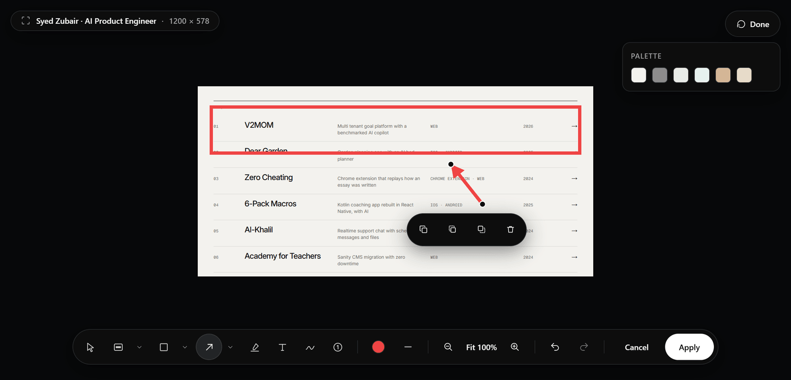
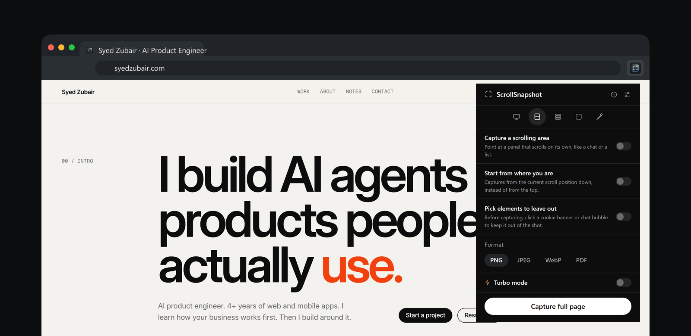

Keep what you capture
History now has folders. Create them in a sidebar, select captures with a box or a shift-click range, and move them in from a menu or by dragging. Captures in a folder are never cleaned up automatically, a folder or any selection downloads as one ZIP, and every capture has a three-dot menu for the things you do most. Clear history can leave the captures in folders alone.
The guide to history folders walks through all of it.
Mark it up properly
Shapes and line ends join the editor, and any mark can be picked up afterwards to move, resize, rotate, restyle, duplicate, or delete. Text, Highlight, and Pen each have their own options, and the editor takes any colour, including one taken off the capture with an eyedropper.
Redact gained Blur, a brush, and an eraser. Crop became a crop box with straighten, and the result page now zooms, with rulers, a grid, and guides.

Put your name on it
A watermark of your own text, a logo, or both can be added to what you save, in a corner, along an edge, in the centre, or tiled across the image. A stamp button on the toolbar switches it off for a single capture. It is off until you turn it on.

More ways to export
PDF is now in the popup's Format row. Any finished capture can be cut into slices afterwards, across or down, and reassembled. The toolbars can stand on either side of the window and shorten themselves to fit, and Settings has a reset for each page and for everything.
Turbo and the popup
Turbo's viewport width dropdown is on by default and works for Slices as well as Full page. The popup scrolls only its options, so Format and Turbo stay in view above Capture, and each mode's icon opens a card with its name, shortcut and what it makes.

Fixed in this release
Turbo no longer catches a sliding navbar part way, repeats a stretch of a long page, or comes out the wrong size in a zoomed tab. Slices no longer repeat a cookie banner or sticky header in every piece.
- The colour picker reads the pixel under the pointer, and the page can no longer read its screenshot.
- Copy can be pressed again after another capture replaces the clipboard.
- Popup tooltips name the shortcut Chrome actually assigned, and side toolbars show their tooltips.
- The extension icon shows again in the toolbar.
Getting the update
- Chrome updates extensions on its own, usually within a day or two of a release.
- To check now, open chrome://extensions, turn on Developer mode, and choose Update.
- Look for version 1.1.0 on ScrollSnapshot's card.